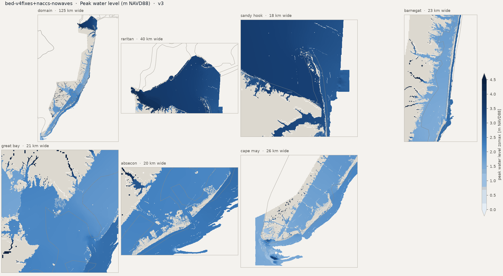
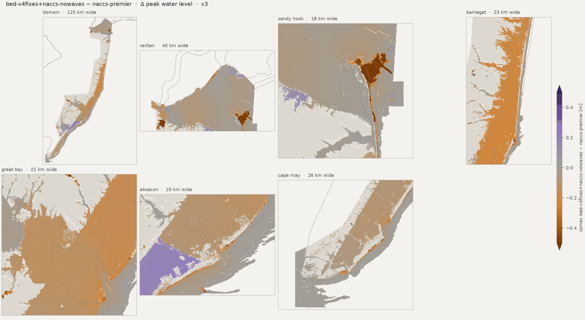
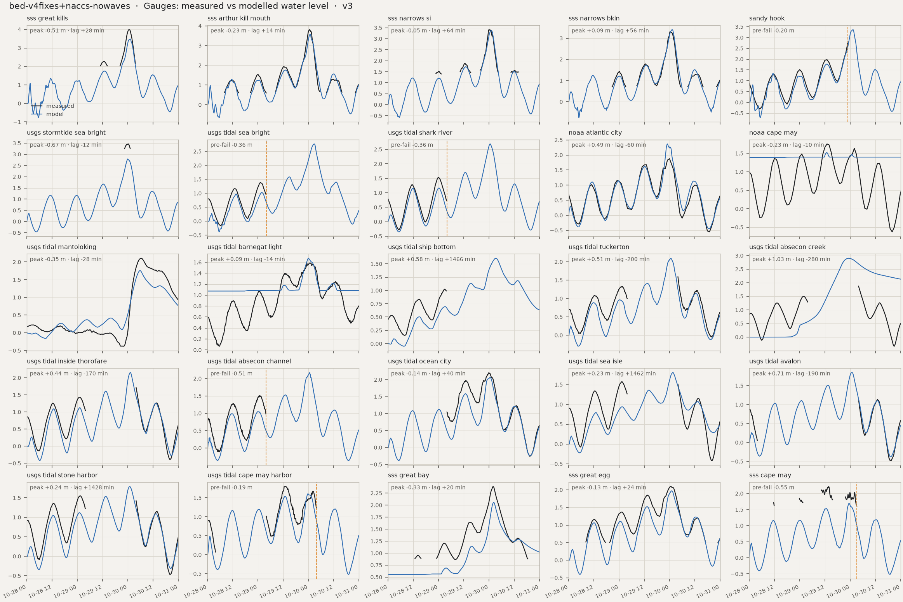
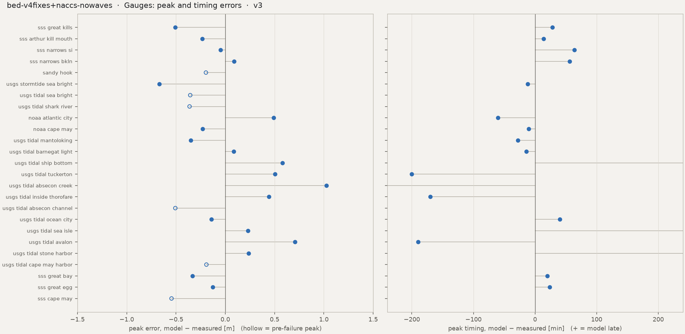

Run card, flags and the standard figure set. HWM numbers: estimator median, radius 50 m. Compare with naccs-premier
HWM: estimator median, radius 50 m, q ≤ 2, dry marks scored at ground (the _scored keys). CSI / POD / FAR on sheet-valid land; km² excl. = motf_km2_excluded_boxes.




| peak_zb_sss_great_kills_m | -1.955272197723389 |
| peak_obs_sss_great_kills_m | 3.990640566666667 |
| peak_obs_time_sss_great_kills | 2012-10-30T00:42 |
| peak_mod_full_sss_great_kills_m | 3.483257532119751 |
| peak_mod_full_time_sss_great_kills | 2012-10-30T01:10 |
| peak_err_sss_great_kills_m | -0.5073830345469159 |
| peak_lag_sss_great_kills_min | 28.0 |
| peak_zb_sss_arthur_kill_mouth_m | -1.063024401664734 |
| peak_obs_sss_arthur_kill_mouth_m | 3.8134290000000006 |
| peak_obs_time_sss_arthur_kill_mouth | 2012-10-30T00:36 |
| peak_mod_full_sss_arthur_kill_mouth_m | 3.5814216136932373 |
| peak_mod_full_time_sss_arthur_kill_mouth | 2012-10-30T00:50 |
| peak_err_sss_arthur_kill_mouth_m | -0.2320073863067633 |
| peak_lag_sss_arthur_kill_mouth_min | 14.0 |
| peak_zb_sss_narrows_si_m | -1.4567134380340576 |
| peak_obs_sss_narrows_si_m | 3.4239073 |
| peak_obs_time_sss_narrows_si | 2012-10-30T00:06 |
| peak_mod_full_sss_narrows_si_m | 3.3775055408477783 |
| peak_mod_full_time_sss_narrows_si | 2012-10-30T01:10 |
| peak_err_sss_narrows_si_m | -0.0464017591522218 |
| peak_lag_sss_narrows_si_min | 64.0 |
| peak_zb_sss_narrows_bkln_m | -3.102429151535034 |
| peak_obs_sss_narrows_bkln_m | 3.315567833333333 |
| peak_obs_time_sss_narrows_bkln | 2012-10-30T00:24 |
| peak_mod_full_sss_narrows_bkln_m | 3.406290054321289 |
| peak_mod_full_time_sss_narrows_bkln | 2012-10-30T01:20 |
| peak_err_sss_narrows_bkln_m | 0.0907222209879559 |
| peak_lag_sss_narrows_bkln_min | 56.0 |
| peak_zb_sandy_hook_m | -4.232899188995361 |
| peak_obs_sandy_hook_m | 2.808 |
| peak_obs_time_sandy_hook | 2012-10-29T23:00 |
| peak_mod_full_sandy_hook_m | 3.366249322891236 |
| peak_mod_full_time_sandy_hook | 2012-10-30T01:20 |
| peak_mod_prefail_sandy_hook_m | 2.6118323802948 |
| peak_err_prefail_sandy_hook_m | -0.1961676197052 |
| peak_record_ends_sandy_hook | 2012-10-29 23:00 |
| peak_zb_usgs_stormtide_sea_bright_m | -1.7469388246536257 |
| peak_obs_usgs_stormtide_sea_bright_m | 3.4651196864959743 |
| peak_obs_time_usgs_stormtide_sea_bright | 2012-10-30T00:12 |
| peak_mod_full_usgs_stormtide_sea_bright_m | 2.795230865478516 |
| peak_mod_full_time_usgs_stormtide_sea_bright | 2012-10-30T00:00 |
| peak_err_usgs_stormtide_sea_bright_m | -0.6698888210174587 |
| peak_lag_usgs_stormtide_sea_bright_min | -12.0 |
| peak_zb_usgs_tidal_sea_bright_m | -4.3453803062438965 |
| peak_obs_usgs_tidal_sea_bright_m | 1.383792 |
| peak_obs_time_usgs_tidal_sea_bright | 2012-10-29T01:12 |
| peak_mod_full_usgs_tidal_sea_bright_m | 2.767624855041504 |
| peak_mod_full_time_usgs_tidal_sea_bright | 2012-10-30T02:50 |
| peak_mod_prefail_usgs_tidal_sea_bright_m | 1.0284572839736938 |
| peak_err_prefail_usgs_tidal_sea_bright_m | -0.3553347160263063 |
| peak_record_ends_usgs_tidal_sea_bright | 2012-10-29 04:00 |
| peak_zb_usgs_tidal_shark_river_m | -4.118553638458252 |
| peak_obs_usgs_tidal_shark_river_m | 1.527048 |
| peak_obs_time_usgs_tidal_shark_river | 2012-10-29T00:00 |
| peak_mod_full_usgs_tidal_shark_river_m | 2.688450813293457 |
| peak_mod_full_time_usgs_tidal_shark_river | 2012-10-30T00:40 |
| peak_mod_prefail_usgs_tidal_shark_river_m | 1.167912483215332 |
| peak_err_prefail_usgs_tidal_shark_river_m | -0.3621835167846678 |
| peak_record_ends_usgs_tidal_shark_river | 2012-10-29 04:00 |
| peak_zb_noaa_atlantic_city_m | -7.114473819732666 |
| peak_obs_noaa_atlantic_city_m | 1.877 |
| peak_obs_time_noaa_atlantic_city | 2012-10-30T00:00 |
| peak_mod_full_noaa_atlantic_city_m | 2.367025136947632 |
| peak_mod_full_time_noaa_atlantic_city | 2012-10-29T23:00 |
| peak_err_noaa_atlantic_city_m | 0.4900251369476318 |
| peak_lag_noaa_atlantic_city_min | -60.0 |
| peak_zb_noaa_cape_may_m | 1.3890953063964844 |
| peak_obs_noaa_cape_may_m | 1.755 |
| peak_obs_time_noaa_cape_may | 2012-10-29T13:00 |
| peak_mod_full_noaa_cape_may_m | 1.5236899852752686 |
| peak_mod_full_time_noaa_cape_may | 2012-10-29T12:50 |
| peak_err_noaa_cape_may_m | -0.2313100147247313 |
| peak_lag_noaa_cape_may_min | -10.0 |
| peak_zb_usgs_tidal_mantoloking_m | -2.429171085357666 |
| peak_obs_usgs_tidal_mantoloking_m | 2.1061680000000003 |
| peak_obs_time_usgs_tidal_mantoloking | 2012-10-30T06:18 |
| peak_mod_full_usgs_tidal_mantoloking_m | 1.7569314241409302 |
| peak_mod_full_time_usgs_tidal_mantoloking | 2012-10-30T05:50 |
| peak_err_usgs_tidal_mantoloking_m | -0.3492365758590701 |
| peak_lag_usgs_tidal_mantoloking_min | -28.0 |
| peak_zb_usgs_tidal_barnegat_light_m | 1.0739723443984983 |
| peak_obs_usgs_tidal_barnegat_light_m | 1.588008 |
| peak_obs_time_usgs_tidal_barnegat_light | 2012-10-30T00:24 |
| peak_mod_full_usgs_tidal_barnegat_light_m | 1.6732958555221558 |
| peak_mod_full_time_usgs_tidal_barnegat_light | 2012-10-30T00:10 |
| peak_err_usgs_tidal_barnegat_light_m | 0.0852878555221556 |
| peak_lag_usgs_tidal_barnegat_light_min | -14.0 |
| peak_zb_usgs_tidal_ship_bottom_m | -4.615384578704834 |
| peak_obs_usgs_tidal_ship_bottom_m | 1.024128 |
| peak_obs_time_usgs_tidal_ship_bottom | 2012-10-29T02:54 |
| peak_mod_full_usgs_tidal_ship_bottom_m | 1.605644941329956 |
| peak_mod_full_time_usgs_tidal_ship_bottom | 2012-10-30T03:20 |
| peak_err_usgs_tidal_ship_bottom_m | 0.5815169413299561 |
| peak_lag_usgs_tidal_ship_bottom_min | 1466.0 |
| peak_zb_usgs_tidal_tuckerton_m | -1.9723796844482424 |
| peak_obs_usgs_tidal_tuckerton_m | 1.591056 |
| peak_obs_time_usgs_tidal_tuckerton | 2012-10-30T04:00 |
| peak_mod_full_usgs_tidal_tuckerton_m | 2.0967092514038086 |
| peak_mod_full_time_usgs_tidal_tuckerton | 2012-10-30T00:40 |
| peak_err_usgs_tidal_tuckerton_m | 0.5056532514038086 |
| peak_lag_usgs_tidal_tuckerton_min | -200.0 |
| peak_zb_usgs_tidal_absecon_creek_m | 2.4660839699208736e-06 |
| peak_obs_usgs_tidal_absecon_creek_m | 1.87452 |
| peak_obs_time_usgs_tidal_absecon_creek | 2012-10-30T04:00 |
| peak_mod_full_usgs_tidal_absecon_creek_m | 2.900896072387696 |
| peak_mod_full_time_usgs_tidal_absecon_creek | 2012-10-29T23:20 |
| peak_err_usgs_tidal_absecon_creek_m | 1.0263760723876951 |
| peak_lag_usgs_tidal_absecon_creek_min | -280.0 |
| peak_zb_usgs_tidal_inside_thorofare_m | -5.44306755065918 |
| peak_obs_usgs_tidal_inside_thorofare_m | 1.712976 |
| peak_obs_time_usgs_tidal_inside_thorofare | 2012-10-30T04:00 |
| peak_mod_full_usgs_tidal_inside_thorofare_m | 2.155233144760132 |
| peak_mod_full_time_usgs_tidal_inside_thorofare | 2012-10-30T01:10 |
| peak_err_usgs_tidal_inside_thorofare_m | 0.4422571447601318 |
| peak_lag_usgs_tidal_inside_thorofare_min | -170.0 |
| peak_zb_usgs_tidal_absecon_channel_m | -2.4803500175476074 |
| peak_obs_usgs_tidal_absecon_channel_m | 1.5575280000000002 |
| peak_obs_time_usgs_tidal_absecon_channel | 2012-10-29T01:06 |
| peak_mod_full_usgs_tidal_absecon_channel_m | 2.1732914447784424 |
| peak_mod_full_time_usgs_tidal_absecon_channel | 2012-10-30T00:40 |
| peak_mod_prefail_usgs_tidal_absecon_channel_m | 1.0508143901824951 |
| peak_err_prefail_usgs_tidal_absecon_channel_m | -0.5067136098175051 |
| peak_record_ends_usgs_tidal_absecon_channel | 2012-10-29 03:54 |
| peak_zb_usgs_tidal_ocean_city_m | -3.884687662124634 |
| peak_obs_usgs_tidal_ocean_city_m | 2.2098 |
| peak_obs_time_usgs_tidal_ocean_city | 2012-10-30T00:00 |
| peak_mod_full_usgs_tidal_ocean_city_m | 2.067702054977417 |
| peak_mod_full_time_usgs_tidal_ocean_city | 2012-10-30T00:40 |
| peak_err_usgs_tidal_ocean_city_m | -0.142097945022583 |
| peak_lag_usgs_tidal_ocean_city_min | 40.0 |
| peak_zb_usgs_tidal_sea_isle_m | -1.7042393684387207 |
| peak_obs_usgs_tidal_sea_isle_m | 1.575816 |
| peak_obs_time_usgs_tidal_sea_isle | 2012-10-29T01:18 |
| peak_mod_full_usgs_tidal_sea_isle_m | 1.8042824268341064 |
| peak_mod_full_time_usgs_tidal_sea_isle | 2012-10-30T01:40 |
| peak_err_usgs_tidal_sea_isle_m | 0.2284664268341063 |
| peak_lag_usgs_tidal_sea_isle_min | 1462.0 |
| peak_zb_usgs_tidal_avalon_m | -5.937126636505127 |
| peak_obs_usgs_tidal_avalon_m | 1.139952 |
| peak_obs_time_usgs_tidal_avalon | 2012-10-30T04:00 |
| peak_mod_full_usgs_tidal_avalon_m | 1.8483309745788568 |
| peak_mod_full_time_usgs_tidal_avalon | 2012-10-30T00:50 |
| peak_err_usgs_tidal_avalon_m | 0.7083789745788573 |
| peak_lag_usgs_tidal_avalon_min | -190.0 |
| peak_zb_usgs_tidal_stone_harbor_m | -6.791902542114258 |
| peak_obs_usgs_tidal_stone_harbor_m | 1.551432 |
| peak_obs_time_usgs_tidal_stone_harbor | 2012-10-29T01:12 |
| peak_mod_full_usgs_tidal_stone_harbor_m | 1.7901803255081177 |
| peak_mod_full_time_usgs_tidal_stone_harbor | 2012-10-30T01:00 |
| peak_err_usgs_tidal_stone_harbor_m | 0.2387483255081175 |
| peak_lag_usgs_tidal_stone_harbor_min | 1428.0 |
| peak_zb_usgs_tidal_cape_may_harbor_m | -1.3016067743301392 |
| peak_obs_usgs_tidal_cape_may_harbor_m | 1.79832 |
| peak_obs_time_usgs_tidal_cape_may_harbor | 2012-10-29T12:42 |
| peak_mod_full_usgs_tidal_cape_may_harbor_m | 1.606990933418274 |
| peak_mod_full_time_usgs_tidal_cape_may_harbor | 2012-10-29T23:50 |
| peak_mod_prefail_usgs_tidal_cape_may_harbor_m | 1.606990933418274 |
| peak_err_prefail_usgs_tidal_cape_may_harbor_m | -0.1913290665817262 |
| peak_record_ends_usgs_tidal_cape_may_harbor | 2012-10-30 03:54 |
| peak_zb_sss_great_bay_m | 0.5555722713470459 |
| peak_obs_sss_great_bay_m | 2.389551566666667 |
| peak_obs_time_sss_great_bay | 2012-10-30T02:00 |
| peak_mod_full_sss_great_bay_m | 2.05633282661438 |
| peak_mod_full_time_sss_great_bay | 2012-10-30T02:20 |
| peak_err_sss_great_bay_m | -0.333218740052287 |
| peak_lag_sss_great_bay_min | 20.0 |
| peak_zb_sss_great_egg_m | -1.4922324419021606 |
| peak_obs_sss_great_egg_m | 2.098467566666667 |
| peak_obs_time_sss_great_egg | 2012-10-30T00:36 |
| peak_mod_full_sss_great_egg_m | 1.9734324216842647 |
| peak_mod_full_time_sss_great_egg | 2012-10-30T01:00 |
| peak_err_sss_great_egg_m | -0.1250351449824016 |
| peak_lag_sss_great_egg_min | 24.0 |
| peak_zb_sss_cape_may_m | -7.165440559387207 |
| peak_obs_sss_cape_may_m | 2.24273711641651 |
| peak_obs_time_sss_cape_may | 2012-10-29T13:48 |
| peak_mod_full_sss_cape_may_m | 1.6975568532943726 |
| peak_mod_full_time_sss_cape_may | 2012-10-29T23:30 |
| peak_mod_prefail_sss_cape_may_m | 1.6975568532943726 |
| peak_err_prefail_sss_cape_may_m | -0.5451802631221381 |
| peak_record_ends_sss_cape_may | 2012-10-30 03:12 |
| tide_obs_range_sss_great_kills_m | 0.204 |
| tide_mod_range_sss_great_kills_m | 1.719 |
| tide_mod_drift_sss_great_kills_m | 0.459 |
| tide_mod_frac_rising_sss_great_kills | 0.563 |
| tide_mod_is_tidal_sss_great_kills | True |
| tide_range_damping_sss_great_kills_m | -1.515 |
| phase_lag_sss_great_kills_min | |
| tide_obs_range_sss_arthur_kill_mouth_m | 1.309 |
| tide_mod_range_sss_arthur_kill_mouth_m | 1.646 |
| tide_mod_drift_sss_arthur_kill_mouth_m | 0.449 |
| tide_mod_frac_rising_sss_arthur_kill_mouth | 0.549 |
| tide_mod_is_tidal_sss_arthur_kill_mouth | True |
| tide_range_damping_sss_arthur_kill_mouth_m | -0.337 |
| phase_lag_sss_arthur_kill_mouth_min | 7.2 |
| tide_obs_range_sss_narrows_si_m | 0.407 |
| tide_mod_range_sss_narrows_si_m | 1.671 |
| tide_mod_drift_sss_narrows_si_m | 0.45 |
| tide_mod_frac_rising_sss_narrows_si | 0.532 |
| tide_mod_is_tidal_sss_narrows_si | True |
| tide_range_damping_sss_narrows_si_m | -1.264 |
| phase_lag_sss_narrows_si_min | -49.1 |
| tide_obs_range_sss_narrows_bkln_m | 1.035 |
| tide_mod_range_sss_narrows_bkln_m | 1.755 |
| tide_mod_drift_sss_narrows_bkln_m | 0.444 |
| tide_mod_frac_rising_sss_narrows_bkln | 0.518 |
| tide_mod_is_tidal_sss_narrows_bkln | True |
| tide_range_damping_sss_narrows_bkln_m | -0.72 |
| phase_lag_sss_narrows_bkln_min | -120.0 |
| tide_obs_range_sandy_hook_m | 2.029 |
| tide_mod_range_sandy_hook_m | 1.648 |
| tide_mod_drift_sandy_hook_m | 0.5 |
| tide_mod_frac_rising_sandy_hook | 0.551 |
| tide_mod_is_tidal_sandy_hook | True |
| tide_range_damping_sandy_hook_m | 0.381 |
| phase_lag_sandy_hook_min | -0.2 |
| tide_obs_range_usgs_stormtide_sea_bright_m | |
| tide_mod_range_usgs_stormtide_sea_bright_m | 1.585 |
| tide_mod_drift_usgs_stormtide_sea_bright_m | 0.547 |
| tide_mod_frac_rising_usgs_stormtide_sea_bright | 0.556 |
| tide_mod_is_tidal_usgs_stormtide_sea_bright | True |
| tide_range_damping_usgs_stormtide_sea_bright_m | |
| phase_lag_usgs_stormtide_sea_bright_min | |
| tide_obs_range_usgs_tidal_sea_bright_m | 1.283 |
| tide_mod_range_usgs_tidal_sea_bright_m | 1.052 |
| tide_mod_drift_usgs_tidal_sea_bright_m | 0.368 |
| tide_mod_frac_rising_usgs_tidal_sea_bright | 0.559 |
| tide_mod_is_tidal_usgs_tidal_sea_bright | True |
| tide_range_damping_usgs_tidal_sea_bright_m | 0.231 |
| phase_lag_usgs_tidal_sea_bright_min | 19.5 |
| tide_obs_range_usgs_tidal_shark_river_m | 1.539 |
| tide_mod_range_usgs_tidal_shark_river_m | 1.428 |
| tide_mod_drift_usgs_tidal_shark_river_m | 0.476 |
| tide_mod_frac_rising_usgs_tidal_shark_river | 0.518 |
| tide_mod_is_tidal_usgs_tidal_shark_river | True |
| tide_range_damping_usgs_tidal_shark_river_m | 0.111 |
| phase_lag_usgs_tidal_shark_river_min | 7.4 |
| tide_obs_range_noaa_atlantic_city_m | 1.798 |
| tide_mod_range_noaa_atlantic_city_m | 1.386 |
| tide_mod_drift_noaa_atlantic_city_m | 0.578 |
| tide_mod_frac_rising_noaa_atlantic_city | 0.532 |
| tide_mod_is_tidal_noaa_atlantic_city | True |
| tide_range_damping_noaa_atlantic_city_m | 0.412 |
| phase_lag_noaa_atlantic_city_min | 7.6 |
| tide_obs_range_noaa_cape_may_m | 1.561 |
| tide_mod_range_noaa_cape_may_m | 0.046 |
| tide_mod_drift_noaa_cape_may_m | 0.056 |
| tide_mod_frac_rising_noaa_cape_may | 1.0 |
| tide_mod_is_tidal_noaa_cape_may | True |
| tide_range_damping_noaa_cape_may_m | 1.515 |
| phase_lag_noaa_cape_may_min | -120.0 |
| tide_obs_range_usgs_tidal_mantoloking_m | 0.238 |
| tide_mod_range_usgs_tidal_mantoloking_m | 0.313 |
| tide_mod_drift_usgs_tidal_mantoloking_m | 0.207 |
| tide_mod_frac_rising_usgs_tidal_mantoloking | 0.578 |
| tide_mod_is_tidal_usgs_tidal_mantoloking | True |
| tide_range_damping_usgs_tidal_mantoloking_m | -0.075 |
| phase_lag_usgs_tidal_mantoloking_min | -47.0 |
| tide_obs_range_usgs_tidal_barnegat_light_m | 1.003 |
| tide_mod_range_usgs_tidal_barnegat_light_m | 0.083 |
| tide_mod_drift_usgs_tidal_barnegat_light_m | 0.097 |
| tide_mod_frac_rising_usgs_tidal_barnegat_light | 1.0 |
| tide_mod_is_tidal_usgs_tidal_barnegat_light | True |
| tide_range_damping_usgs_tidal_barnegat_light_m | 0.92 |
| phase_lag_usgs_tidal_barnegat_light_min | 0.7 |
| tide_obs_range_usgs_tidal_ship_bottom_m | 0.579 |
| tide_mod_range_usgs_tidal_ship_bottom_m | 0.336 |
| tide_mod_drift_usgs_tidal_ship_bottom_m | 0.508 |
| tide_mod_frac_rising_usgs_tidal_ship_bottom | 0.604 |
| tide_mod_is_tidal_usgs_tidal_ship_bottom | True |
| tide_range_damping_usgs_tidal_ship_bottom_m | 0.243 |
| phase_lag_usgs_tidal_ship_bottom_min | -3.0 |
| tide_obs_range_usgs_tidal_tuckerton_m | 0.927 |
| tide_mod_range_usgs_tidal_tuckerton_m | 1.054 |
| tide_mod_drift_usgs_tidal_tuckerton_m | 0.461 |
| tide_mod_frac_rising_usgs_tidal_tuckerton | 0.548 |
| tide_mod_is_tidal_usgs_tidal_tuckerton | True |
| tide_range_damping_usgs_tidal_tuckerton_m | -0.128 |
| phase_lag_usgs_tidal_tuckerton_min | -29.8 |
| tide_obs_range_usgs_tidal_absecon_creek_m | 1.183 |
| tide_mod_range_usgs_tidal_absecon_creek_m | 0.487 |
| tide_mod_drift_usgs_tidal_absecon_creek_m | 1.319 |
| tide_mod_frac_rising_usgs_tidal_absecon_creek | 1.0 |
| tide_mod_is_tidal_usgs_tidal_absecon_creek | True |
| tide_range_damping_usgs_tidal_absecon_creek_m | 0.696 |
| phase_lag_usgs_tidal_absecon_creek_min | 31.6 |
| tide_obs_range_usgs_tidal_inside_thorofare_m | 1.222 |
| tide_mod_range_usgs_tidal_inside_thorofare_m | 1.415 |
| tide_mod_drift_usgs_tidal_inside_thorofare_m | 0.343 |
| tide_mod_frac_rising_usgs_tidal_inside_thorofare | 0.5 |
| tide_mod_is_tidal_usgs_tidal_inside_thorofare | True |
| tide_range_damping_usgs_tidal_inside_thorofare_m | -0.193 |
| phase_lag_usgs_tidal_inside_thorofare_min | 9.1 |
| tide_obs_range_usgs_tidal_absecon_channel_m | 1.341 |
| tide_mod_range_usgs_tidal_absecon_channel_m | 1.224 |
| tide_mod_drift_usgs_tidal_absecon_channel_m | 0.483 |
| tide_mod_frac_rising_usgs_tidal_absecon_channel | 0.533 |
| tide_mod_is_tidal_usgs_tidal_absecon_channel | True |
| tide_range_damping_usgs_tidal_absecon_channel_m | 0.117 |
| phase_lag_usgs_tidal_absecon_channel_min | -32.9 |
| tide_obs_range_usgs_tidal_ocean_city_m | 1.134 |
| tide_mod_range_usgs_tidal_ocean_city_m | 1.343 |
| tide_mod_drift_usgs_tidal_ocean_city_m | 0.456 |
| tide_mod_frac_rising_usgs_tidal_ocean_city | 0.504 |
| tide_mod_is_tidal_usgs_tidal_ocean_city | True |
| tide_range_damping_usgs_tidal_ocean_city_m | -0.209 |
| phase_lag_usgs_tidal_ocean_city_min | 54.6 |
| tide_obs_range_usgs_tidal_sea_isle_m | 1.207 |
| tide_mod_range_usgs_tidal_sea_isle_m | 0.646 |
| tide_mod_drift_usgs_tidal_sea_isle_m | 0.414 |
| tide_mod_frac_rising_usgs_tidal_sea_isle | 0.546 |
| tide_mod_is_tidal_usgs_tidal_sea_isle | True |
| tide_range_damping_usgs_tidal_sea_isle_m | 0.561 |
| phase_lag_usgs_tidal_sea_isle_min | -2.6 |
| tide_obs_range_usgs_tidal_avalon_m | |
| tide_mod_range_usgs_tidal_avalon_m | 1.213 |
| tide_mod_drift_usgs_tidal_avalon_m | 0.348 |
| tide_mod_frac_rising_usgs_tidal_avalon | 0.537 |
| tide_mod_is_tidal_usgs_tidal_avalon | True |
| tide_range_damping_usgs_tidal_avalon_m | |
| phase_lag_usgs_tidal_avalon_min | |
| tide_obs_range_usgs_tidal_stone_harbor_m | 1.21 |
| tide_mod_range_usgs_tidal_stone_harbor_m | 1.17 |
| tide_mod_drift_usgs_tidal_stone_harbor_m | 0.338 |
| tide_mod_frac_rising_usgs_tidal_stone_harbor | 0.496 |
| tide_mod_is_tidal_usgs_tidal_stone_harbor | True |
| tide_range_damping_usgs_tidal_stone_harbor_m | 0.04 |
| phase_lag_usgs_tidal_stone_harbor_min | -10.7 |
| tide_obs_range_usgs_tidal_cape_may_harbor_m | 1.186 |
| tide_mod_range_usgs_tidal_cape_may_harbor_m | 1.366 |
| tide_mod_drift_usgs_tidal_cape_may_harbor_m | 0.288 |
| tide_mod_frac_rising_usgs_tidal_cape_may_harbor | 0.522 |
| tide_mod_is_tidal_usgs_tidal_cape_may_harbor | True |
| tide_range_damping_usgs_tidal_cape_may_harbor_m | -0.18 |
| phase_lag_usgs_tidal_cape_may_harbor_min | 46.3 |
| tide_obs_range_sss_great_bay_m | 0.401 |
| tide_mod_range_sss_great_bay_m | 0.153 |
| tide_mod_drift_sss_great_bay_m | 0.187 |
| tide_mod_frac_rising_sss_great_bay | 0.703 |
| tide_mod_is_tidal_sss_great_bay | True |
| tide_range_damping_sss_great_bay_m | 0.248 |
| phase_lag_sss_great_bay_min | 83.0 |
| tide_obs_range_sss_great_egg_m | 1.225 |
| tide_mod_range_sss_great_egg_m | 1.308 |
| tide_mod_drift_sss_great_egg_m | 0.356 |
| tide_mod_frac_rising_sss_great_egg | 0.504 |
| tide_mod_is_tidal_sss_great_egg | True |
| tide_range_damping_sss_great_egg_m | -0.083 |
| phase_lag_sss_great_egg_min | -19.1 |
| tide_obs_range_sss_cape_may_m | 0.401 |
| tide_mod_range_sss_cape_may_m | 1.378 |
| tide_mod_drift_sss_cape_may_m | 0.394 |
| tide_mod_frac_rising_sss_cape_may | 0.525 |
| tide_mod_is_tidal_sss_cape_may | True |
| tide_range_damping_sss_cape_may_m | -0.977 |
| phase_lag_sss_cape_may_min | -4.5 |
| hwm_estimator | median |
| hwm_radius_m | 50.0 |
| hwm_n_scored | 94 |
| hwm_n_dry_scored | 1 |
| hwm_rmse_scored_m | 0.3820762693908003 |
| hwm_bias_scored_m | -0.2500475548176055 |
| hwm_within0.5_scored | 0.8404255319148937 |
| hwm_n_wet | 137 |
| hwm_n_dry | 3 |
| hwm_rmse_m | 0.3800840984168468 |
| hwm_bias_m | -0.2469738689443116 |
| hwm_within0.5 | 0.8494623655913979 |
| hwm_n_delaware_bay_shore | 0 |
| hwm_bias_delaware_bay_shore_m | |
| hwm_rmse_delaware_bay_shore_m | |
| hwm_n_scored_delaware_bay_shore | 0 |
| hwm_n_dry_delaware_bay_shore | 0 |
| hwm_bias_scored_delaware_bay_shore_m | |
| hwm_rmse_scored_delaware_bay_shore_m | |
| hwm_n_cape_may | 2 |
| hwm_bias_cape_may_m | -0.0569871077537537 |
| hwm_rmse_cape_may_m | 0.1491659505265409 |
| hwm_n_scored_cape_may | 2 |
| hwm_n_dry_cape_may | 0 |
| hwm_bias_scored_cape_may_m | -0.0569871077537537 |
| hwm_rmse_scored_cape_may_m | 0.1491659505265409 |
| hwm_n_cape_may_back_bays | 4 |
| hwm_bias_cape_may_back_bays_m | -0.3486020791530608 |
| hwm_rmse_cape_may_back_bays_m | 0.362493932516535 |
| hwm_n_scored_cape_may_back_bays | 4 |
| hwm_n_dry_cape_may_back_bays | 0 |
| hwm_bias_scored_cape_may_back_bays_m | -0.3486020791530608 |
| hwm_rmse_scored_cape_may_back_bays_m | 0.362493932516535 |
| hwm_n_great_egg | 2 |
| hwm_bias_great_egg_m | -0.2803832178115846 |
| hwm_rmse_great_egg_m | 0.3256493666207545 |
| hwm_n_scored_great_egg | 2 |
| hwm_n_dry_great_egg | 0 |
| hwm_bias_scored_great_egg_m | -0.2803832178115846 |
| hwm_rmse_scored_great_egg_m | 0.3256493666207545 |
| hwm_n_absecon_atlantic_city | 9 |
| hwm_bias_absecon_atlantic_city_m | -0.1630663093990749 |
| hwm_rmse_absecon_atlantic_city_m | 0.1879997840531879 |
| hwm_n_scored_absecon_atlantic_city | 9 |
| hwm_n_dry_absecon_atlantic_city | 0 |
| hwm_bias_scored_absecon_atlantic_city_m | -0.1630663093990749 |
| hwm_rmse_scored_absecon_atlantic_city_m | 0.1879997840531879 |
| hwm_n_lbi_barrier | 4 |
| hwm_bias_lbi_barrier_m | -0.297353669643402 |
| hwm_rmse_lbi_barrier_m | 0.3948576366309476 |
| hwm_n_scored_lbi_barrier | 4 |
| hwm_n_dry_lbi_barrier | 0 |
| hwm_bias_scored_lbi_barrier_m | -0.297353669643402 |
| hwm_rmse_scored_lbi_barrier_m | 0.3948576366309476 |
| hwm_n_great_bay_mullica | 9 |
| hwm_bias_great_bay_mullica_m | -0.2518805201848348 |
| hwm_rmse_great_bay_mullica_m | 0.4352643268164778 |
| hwm_n_scored_great_bay_mullica | 9 |
| hwm_n_dry_great_bay_mullica | 0 |
| hwm_bias_scored_great_bay_mullica_m | -0.2518805201848348 |
| hwm_rmse_scored_great_bay_mullica_m | 0.4352643268164778 |
| hwm_n_manasquan | 10 |
| hwm_bias_manasquan_m | -0.3910946231842041 |
| hwm_rmse_manasquan_m | 0.4717033625842762 |
| hwm_n_scored_manasquan | 10 |
| hwm_n_dry_manasquan | 0 |
| hwm_bias_scored_manasquan_m | -0.3910946231842041 |
| hwm_rmse_scored_manasquan_m | 0.4717033625842762 |
| hwm_n_barnegat_barrier | 1 |
| hwm_bias_barnegat_barrier_m | -0.3724326457977294 |
| hwm_rmse_barnegat_barrier_m | 0.3724326457977294 |
| hwm_n_scored_barnegat_barrier | 1 |
| hwm_n_dry_barnegat_barrier | 0 |
| hwm_bias_scored_barnegat_barrier_m | -0.3724326457977294 |
| hwm_rmse_scored_barnegat_barrier_m | 0.3724326457977294 |
| hwm_n_barnegat_bay | 6 |
| hwm_bias_barnegat_bay_m | -0.3763367277781169 |
| hwm_rmse_barnegat_bay_m | 0.4931474379625548 |
| hwm_n_scored_barnegat_bay | 6 |
| hwm_n_dry_barnegat_bay | 0 |
| hwm_bias_scored_barnegat_bay_m | -0.3763367277781169 |
| hwm_rmse_scored_barnegat_bay_m | 0.4931474379625548 |
| hwm_n_shark_river | 2 |
| hwm_bias_shark_river_m | -0.3129908714294434 |
| hwm_rmse_shark_river_m | 0.4517329805727813 |
| hwm_n_scored_shark_river | 2 |
| hwm_n_dry_shark_river | 0 |
| hwm_bias_scored_shark_river_m | -0.3129908714294434 |
| hwm_rmse_scored_shark_river_m | 0.4517329805727813 |
| hwm_n_south_coast | 3 |
| hwm_bias_south_coast_m | -0.4805184650421143 |
| hwm_rmse_south_coast_m | 0.6322794984162162 |
| hwm_n_scored_south_coast | 4 |
| hwm_n_dry_south_coast | 1 |
| hwm_bias_scored_south_coast_m | -0.4943639340400696 |
| hwm_rmse_scored_south_coast_m | 0.6096148923444772 |
| hwm_n_sandy_hook_bay | 4 |
| hwm_bias_sandy_hook_bay_m | -0.2233336272239684 |
| hwm_rmse_sandy_hook_bay_m | 0.2623142164413244 |
| hwm_n_scored_sandy_hook_bay | 4 |
| hwm_n_dry_sandy_hook_bay | 0 |
| hwm_bias_scored_sandy_hook_bay_m | -0.2233336272239684 |
| hwm_rmse_scored_sandy_hook_bay_m | 0.2623142164413244 |
| hwm_n_raritan_bay | 19 |
| hwm_bias_raritan_bay_m | -0.206301797967208 |
| hwm_rmse_raritan_bay_m | 0.4460408763582069 |
| hwm_n_scored_raritan_bay | 19 |
| hwm_n_dry_raritan_bay | 0 |
| hwm_bias_scored_raritan_bay_m | -0.206301797967208 |
| hwm_rmse_scored_raritan_bay_m | 0.4460408763582069 |
| hwm_n_lower_bay_si_shore | 3 |
| hwm_bias_lower_bay_si_shore_m | -0.1967891184488931 |
| hwm_rmse_lower_bay_si_shore_m | 0.2527308018554546 |
| hwm_n_scored_lower_bay_si_shore | 3 |
| hwm_n_dry_lower_bay_si_shore | 0 |
| hwm_bias_scored_lower_bay_si_shore_m | -0.1967891184488931 |
| hwm_rmse_scored_lower_bay_si_shore_m | 0.2527308018554546 |
| hwm_n_atlantic_oceanfront | 3 |
| hwm_bias_atlantic_oceanfront_m | -0.2078317260742186 |
| hwm_rmse_atlantic_oceanfront_m | 0.2207556441779439 |
| hwm_n_scored_atlantic_oceanfront | 3 |
| hwm_n_dry_atlantic_oceanfront | 0 |
| hwm_bias_scored_atlantic_oceanfront_m | -0.2078317260742186 |
| hwm_rmse_scored_atlantic_oceanfront_m | 0.2207556441779439 |
| hwm_n_shrewsbury_navesink | 12 |
| hwm_bias_shrewsbury_navesink_m | -0.111634759426117 |
| hwm_rmse_shrewsbury_navesink_m | 0.1233492627955383 |
| hwm_n_scored_shrewsbury_navesink | 12 |
| hwm_n_dry_shrewsbury_navesink | 0 |
| hwm_bias_scored_shrewsbury_navesink_m | -0.111634759426117 |
| hwm_rmse_scored_shrewsbury_navesink_m | 0.1233492627955383 |
| hwm_n_unclassified | 0 |
| hwm_bias_unclassified_m | |
| hwm_rmse_unclassified_m | |
| hwm_n_scored_unclassified | 0 |
| hwm_n_dry_unclassified | 0 |
| hwm_bias_scored_unclassified_m | |
| hwm_rmse_scored_unclassified_m | |
| motf_csi | 0.7050591262574929 |
| motf_pod | 0.8613280135641436 |
| motf_far | 0.2046593494312512 |
| motf_km2_unsimulated | 7817.5233 |
| motf_km2_unsim_motfwet | 181.188675 |
| motf_km2_unsim_modwet | 0.01845 |
| motf_km2_excluded_boxes | 14.037525 |
| motf_km2_fa_connected | 57.666825 |
| motf_km2_fa_disconnected | 115.3944 |
| motf_km2_fa_rainonly | 0.0 |
| motf_far_connected | 0.0789727323652718 |
| motf_csi_connected | 0.8020905253898771 |
| domain | v3 |
| extent_admissible | False |
| engine | bin:v2.3.3-winddir-fix-1-gf11@673ee3bf |
| snapwave_direction | off |
| subgrid | _subgrid_v4fixes@183ce59b |
| retired_to | |
| wind_scale | 1.0 |
| sea_level_offset | none |
| motf_km2_excluded_invalid | 0.0 |